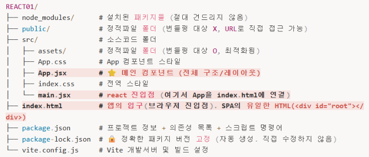

01
주요 파일 설명

프로젝트의 루트 디렉토리와 src 폴더 내 주요 파일들의
역할은 다음과 같습니다.
| 파일명 | 역할 |
|---|---|
| index.html | 브라우저가 가장 먼저 로드하는 파일이며, 실제 콘텐츠가 주입되는 빈 컨테이너 역할을 수행합니다. |
| main.jsx | React 애플리케이션의 진입점(Entry Point)으로, HTML 요소와 React 컴포넌트를 연결합니다. |
| App.jsx | 메인 컴포넌트이며, 앱의 전체 구조와 레이아웃을 담당합니다. |
| package.json | 프로젝트 이름, 버전, 패키지 목록, 실행 스크립트 등을 관리합니다. |
| package-lock.json | 패키지의 정확한 버전을 잠금 처리하여 팀원 간 동일한 환경을 보장합니다. |
| vite.config.js | 개발 서버 포트, 프록시, 빌드 옵션 등 Vite 관련 설정을 담당합니다. |
02
애플리케이션 실행 흐름
-
브라우저 진입:
index.html파일을 로드합니다. -
스크립트 실행:
index.html내부에 포함된main.jsx모듈을 실행합니다. -
React 렌더링:
main.jsx에서 root 요소를 찾아App.jsx컴포넌트를 화면에 그립니다.
03
단계별 상세 설명
3.1. index.html (브라우저 진입점)
초기 상태는 비어 있는
<div id="root"></div> 요소만을 포함하며,
JavaScript가 동적으로 내용을 주입합니다.
- SPA(Single Page Application): 단 한 장의 HTML 파일로 전체 페이지를 동적으로 구성합니다.
- Mount: React 앱이 실제 DOM 요소에 부착되는 과정을 뜻합니다.
3.2. main.jsx (React 진입점)
createRoot를 통해 HTML의 root 요소를 제어하고 React
컴포넌트를 렌더링합니다.
StrictMode의 역할:
- 개발 환경에서 잠재적 버그 감지를 위해 컴포넌트를 두 번 호출합니다.
- 컴포넌트의 순수성(Pure Function)을 검증합니다.
3.3. App.jsx (메인 컴포넌트)
-
CSS Import:
import './App.css'를 통해 스타일을 적용합니다. - 함수형 컴포넌트: JavaScript 함수 형식을 통해 UI를 정의합니다.
- JSX 반환: HTML과 유사한 마크업 구조를 JavaScript 안에서 반환합니다.
04
public 폴더와 assets 폴더 비교
| 구분 | public/ | src/assets/ |
|---|---|---|
| 번들링 여부 | 포함되지 않음 (그대로 배포) | 포함됨 (최적화 수행) |
| 파일명 | 원본 이름 유지 | 고유 해시값 추가 |
| 접근 방법 |
경로 직접 접근 (/logo.png)
|
import 문 사용 |
05
번들링(Bundling)의 개념
여러 파일을 브라우저 최적화 상태로 변환하는 과정입니다.
- 파일 병합: 여러 JS 파일을 하나로 합쳐 네트워크 요청 횟수를 줄입니다.
- 압축(Minification): 공백 제거 및 이미지 최적화를 수행합니다.
- Tree Shaking: 사용하지 않는 코드를 제거하여 결과물 용량을 최소화합니다.
Comments